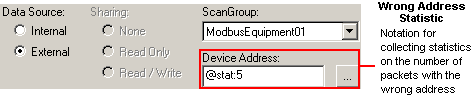

|
|
|
|
|
|
|
|
Before using the following, the driver and equipment should already be configured. For instructions, see Section 5.2, Setting Up Your Equipment.

Instead of using variables, you can use the configuration menu to view driver statistics.
Create a new variable. For information on how to create variables, see Section 6.2.2, Creating Variables.
In the New Variable dialog box, set Data Type to an integer (INT, DINT, UINT, UDINT), Data Source to External, and select the Scan Group of a driver that supports driver statistics.

Driver statistics do not use the Scan Rate set in the selected Scan Group. Driver statistics are always updated every 100ms.
In the Device Address field, type @STATISTIC:X
Replace STATISTIC with stat if you want to display a current statistic, prevstat if you want to display a previous statistic, or sys if you want to run an operation.
Replace X with the index number of the statistic table the variable is referring to. See Section 5.3, Collecting Driver Statistics: Statistic Tables for the various statistics you can collect.


Type driver statistics into the Device Address field in the variable properties (Property Inspector) or the Variable Properties dialog box. Do not try to enter driver statistics from the device address keypad.